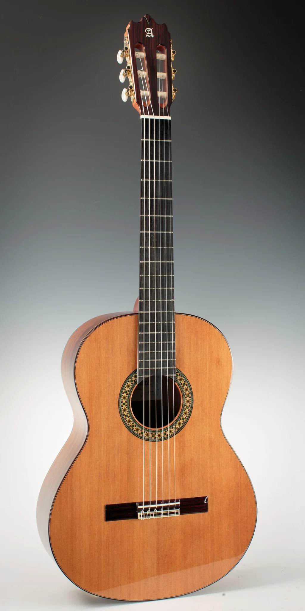
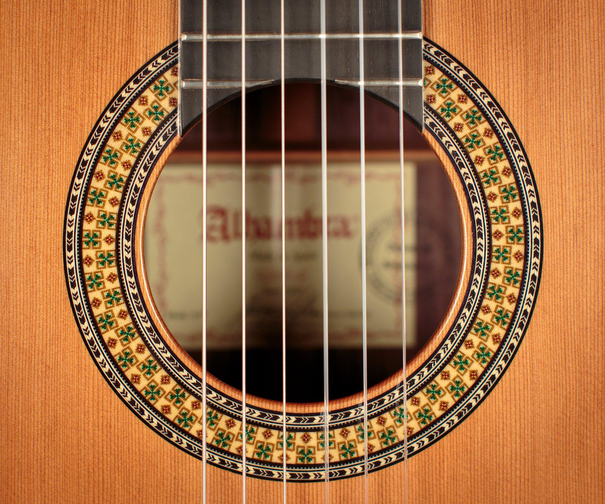
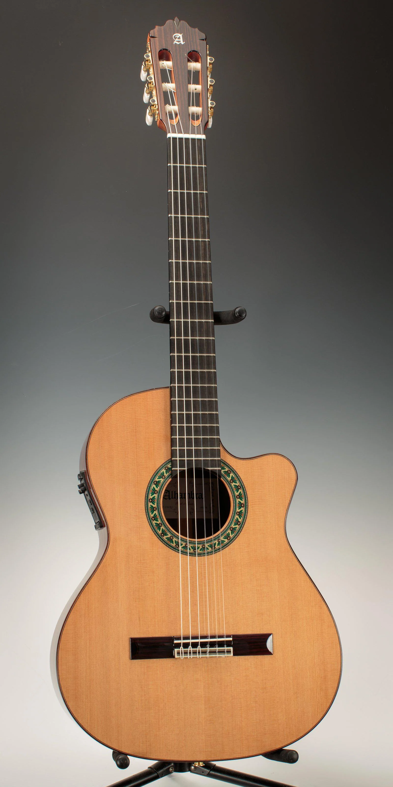

Alhambra Guitars - Іспанська душа у кожній ноті

Alhambra 3C (“Black Satin”) — чудовий вибір для просунутих гітаристів і для навчання.

Alhambra 4P Classic — класичний корпус із елегантним оздобленням, баланс якості та доступності.

Alhambra 7P Classic — концертна модель з кедровою верхньою декою і корпусом з палісандру.

Деталь: розетка навколо резонаторного отвору гітари, підкреслює акуратну обробку.

Alhambra у фламенко-стилі — жива дека в теплому кольорі, вузький корпус, характерний для фламенко.

Модель з вирізом (cutaway) та електронною системою підсилення — ідеально для сценічного виконання.